import numpy as np
import pandas as pd
import seaborn as sns
import matplotlib.pyplot as plt
import osBASKETBALL BRACKET FORECASTING 2024
- Data Loading.
# Data Section 1 - The Basics:
MTeams= pd.read_csv('D:\Source\Orion_innovation_internship_repos\Basketball_Bracket_Forecasting_2024\Datasets\MTeams.csv')
WTeams= pd.read_csv('D:\Source\Orion_innovation_internship_repos\Basketball_Bracket_Forecasting_2024\Datasets\WTeams.csv')
MSeasons= pd.read_csv('D:\Source\Orion_innovation_internship_repos\Basketball_Bracket_Forecasting_2024\Datasets\MSeasons.csv')
WSeasons= pd.read_csv('D:\Source\Orion_innovation_internship_repos\Basketball_Bracket_Forecasting_2024\Datasets\WSeasons.csv')
MNCAATourneySeeds= pd.read_csv('D:\Source\Orion_innovation_internship_repos\Basketball_Bracket_Forecasting_2024\Datasets\MNCAATourneySeeds.csv')
WNCAATourneySeeds= pd.read_csv('D:\Source\Orion_innovation_internship_repos\Basketball_Bracket_Forecasting_2024\Datasets\WNCAATourneySeeds.csv')
# Data Section 2 - Team Box Scores
MRegularSeasonCompactResults= pd.read_csv('D:\Source\Orion_innovation_internship_repos\Basketball_Bracket_Forecasting_2024\Datasets\MRegularSeasonCompactResults.csv')
WRegularSeasonCompactResults= pd.read_csv('D:\Source\Orion_innovation_internship_repos\Basketball_Bracket_Forecasting_2024\Datasets\WRegularSeasonCompactResults.csv')
MNCAATourneyCompactResults= pd.read_csv('D:\Source\Orion_innovation_internship_repos\Basketball_Bracket_Forecasting_2024\Datasets\MNCAATourneyCompactResults.csv')
WNCAATourneyCompactResults= pd.read_csv('D:\Source\Orion_innovation_internship_repos\Basketball_Bracket_Forecasting_2024\Datasets\WNCAATourneyCompactResults.csv')
MRegularSeasonDetailedResults= pd.read_csv('D:\Source\Orion_innovation_internship_repos\Basketball_Bracket_Forecasting_2024\Datasets\MRegularSeasonDetailedResults.csv')
WRegularSeasonDetailedResults= pd.read_csv('D:\Source\Orion_innovation_internship_repos\Basketball_Bracket_Forecasting_2024\Datasets\WRegularSeasonDetailedResults.csv')
MNCAATourneyDetailedResults= pd.read_csv('D:\Source\Orion_innovation_internship_repos\Basketball_Bracket_Forecasting_2024\Datasets\MNCAATourneyDetailedResults.csv')
WNCAATourneyDetailedResults= pd.read_csv('D:\Source\Orion_innovation_internship_repos\Basketball_Bracket_Forecasting_2024\Datasets\WNCAATourneyDetailedResults.csv')
# Data Section 2 - Team Box Scores
MRegularSeasonCompactResults= pd.read_csv('D:\Source\Orion_innovation_internship_repos\Basketball_Bracket_Forecasting_2024\Datasets\MRegularSeasonCompactResults.csv')
WRegularSeasonCompactResults= pd.read_csv('D:\Source\Orion_innovation_internship_repos\Basketball_Bracket_Forecasting_2024\Datasets\WRegularSeasonCompactResults.csv')
MNCAATourneyCompactResults= pd.read_csv('D:\Source\Orion_innovation_internship_repos\Basketball_Bracket_Forecasting_2024\Datasets\MNCAATourneyCompactResults.csv')
WNCAATourneyCompactResults= pd.read_csv('D:\Source\Orion_innovation_internship_repos\Basketball_Bracket_Forecasting_2024\Datasets\WNCAATourneyCompactResults.csv')
MRegularSeasonDetailedResults= pd.read_csv('D:\Source\Orion_innovation_internship_repos\Basketball_Bracket_Forecasting_2024\Datasets\MRegularSeasonDetailedResults.csv')
WRegularSeasonDetailedResults= pd.read_csv('D:\Source\Orion_innovation_internship_repos\Basketball_Bracket_Forecasting_2024\Datasets\WRegularSeasonDetailedResults.csv')
MNCAATourneyDetailedResults= pd.read_csv('D:\Source\Orion_innovation_internship_repos\Basketball_Bracket_Forecasting_2024\Datasets\MNCAATourneyDetailedResults.csv')
WNCAATourneyDetailedResults= pd.read_csv('D:\Source\Orion_innovation_internship_repos\Basketball_Bracket_Forecasting_2024\Datasets\WNCAATourneyDetailedResults.csv')
# Data Section 3 - Geography
Cities= pd.read_csv('D:\Source\Orion_innovation_internship_repos\Basketball_Bracket_Forecasting_2024\Datasets\Cities.csv')
MGameCities= pd.read_csv('D:\Source\Orion_innovation_internship_repos\Basketball_Bracket_Forecasting_2024\Datasets\MGameCities.csv')
WGameCities= pd.read_csv('D:\Source\Orion_innovation_internship_repos\Basketball_Bracket_Forecasting_2024\Datasets\WGameCities.csv')
# Data Section 5 - Supplements
MTeamCoaches= pd.read_csv('D:\Source\Orion_innovation_internship_repos\Basketball_Bracket_Forecasting_2024\Datasets\MTeamCoaches.csv')
Conferences= pd.read_csv('D:\Source\Orion_innovation_internship_repos\Basketball_Bracket_Forecasting_2024\Datasets\Conferences.csv')
MTeamConferences= pd.read_csv('D:\Source\Orion_innovation_internship_repos\Basketball_Bracket_Forecasting_2024\Datasets\MTeamConferences.csv')
WTeamConferences= pd.read_csv('D:\Source\Orion_innovation_internship_repos\Basketball_Bracket_Forecasting_2024\Datasets\WTeamConferences.csv')
MConferenceTourneyGames= pd.read_csv('D:\Source\Orion_innovation_internship_repos\Basketball_Bracket_Forecasting_2024\Datasets\MConferenceTourneyGames.csv')
MSecondaryTourneyTeams= pd.read_csv('D:\Source\Orion_innovation_internship_repos\Basketball_Bracket_Forecasting_2024\Datasets\MSecondaryTourneyTeams.csv')
MSecondaryTourneyCompactResults= pd.read_csv('D:\Source\Orion_innovation_internship_repos\Basketball_Bracket_Forecasting_2024\Datasets\MSecondaryTourneyCompactResults.csv')
MTeamSpellings= pd.read_csv('D:\Source\Orion_innovation_internship_repos\Basketball_Bracket_Forecasting_2024\Datasets\MTeamSpellings.csv', encoding='ISO-8859-1')
WTeamSpellings= pd.read_csv('D:\Source\Orion_innovation_internship_repos\Basketball_Bracket_Forecasting_2024\Datasets\WTeamSpellings.csv', encoding='ISO-8859-1')
MNCAATourneySlots= pd.read_csv('D:\Source\Orion_innovation_internship_repos\Basketball_Bracket_Forecasting_2024\Datasets\MNCAATourneySlots.csv')
WNCAATourneySlots= pd.read_csv('D:\Source\Orion_innovation_internship_repos\Basketball_Bracket_Forecasting_2024\Datasets\WNCAATourneySlots.csv')
MNCAATourneySeedRoundSlots= pd.read_csv('D:\Source\Orion_innovation_internship_repos\Basketball_Bracket_Forecasting_2024\Datasets\MNCAATourneySeedRoundSlots.csv')
# Data Section 6 - Others
tourney_seeds_2024= pd.read_csv('D:\Source\Orion_innovation_internship_repos\Basketball_Bracket_Forecasting_2024\Datasets\seeds.csv')
sample_submission= pd.read_csv('D:\Source\Orion_innovation_internship_repos\Basketball_Bracket_Forecasting_2024\Datasets\sample_submission.csv')- Exploratory Data Analysis (EDA):
Men
MTeams.head()| TeamID | TeamName | FirstD1Season | LastD1Season | |
|---|---|---|---|---|
| 0 | 1101 | Abilene Chr | 2014 | 2024 |
| 1 | 1102 | Air Force | 1985 | 2024 |
| 2 | 1103 | Akron | 1985 | 2024 |
| 3 | 1104 | Alabama | 1985 | 2024 |
| 4 | 1105 | Alabama A&M | 2000 | 2024 |
MTeams['D1Seasons'] = MTeams['LastD1Season'] - MTeams['FirstD1Season']
df_d1_2024 = MTeams[MTeams['LastD1Season'] == 2024]
fewest_d1_seasons = df_d1_2024.nsmallest(20, 'D1Seasons')
plt.figure(figsize=(10, 6))
plt.bar(fewest_d1_seasons['TeamName'], fewest_d1_seasons['D1Seasons'], color='skyblue')
plt.title('Teams with the Fewest D1 Seasons (up to 2024)')
plt.xlabel('Team Name')
plt.ylabel('Number of D1 Seasons')
plt.xticks(rotation=90)
plt.tight_layout()
plt.show()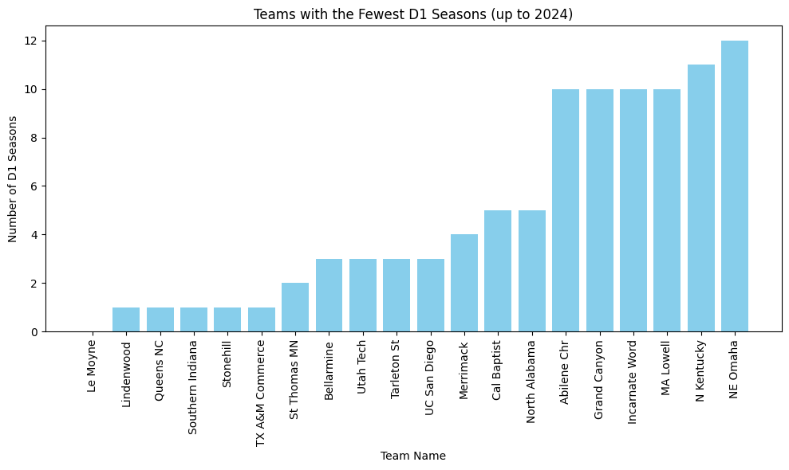
def plot_regions(df):
region_w_counts = df['RegionW'].value_counts()
region_x_counts = df['RegionX'].value_counts()
region_y_counts = df['RegionY'].value_counts()
region_z_counts = df['RegionZ'].value_counts()
region_counts = pd.DataFrame({
'RegionW': region_w_counts,
'RegionX': region_x_counts,
'RegionY': region_y_counts,
'RegionZ': region_z_counts
})
region_counts = region_counts.fillna(0).astype(int)
fig, ax = plt.subplots(2, 2, figsize=(14, 10), sharey=True)
ax[0, 0].bar(region_counts.index, region_counts['RegionW'], color='blue')
ax[0, 0].set_title('Region W Counts')
ax[0, 0].set_ylabel('Counts')
ax[0, 0].tick_params(axis='x', rotation=90)
ax[0, 1].bar(region_counts.index, region_counts['RegionX'], color='red')
ax[0, 1].set_title('Region X Counts')
ax[0, 1].tick_params(axis='x', rotation=90)
ax[1, 0].bar(region_counts.index, region_counts['RegionY'], color='orange')
ax[1, 0].set_title('Region Y Counts')
ax[1, 0].set_ylabel('Counts')
ax[1, 0].set_xlabel('Region')
ax[1, 0].tick_params(axis='x', rotation=90)
ax[1, 1].bar(region_counts.index, region_counts['RegionZ'], color='yellow')
ax[1, 1].set_title('Region Z Counts')
ax[1, 1].set_xlabel('Region')
ax[1, 1].tick_params(axis='x', rotation=90)
plt.tight_layout()
plt.show()
plot_regions(MSeasons)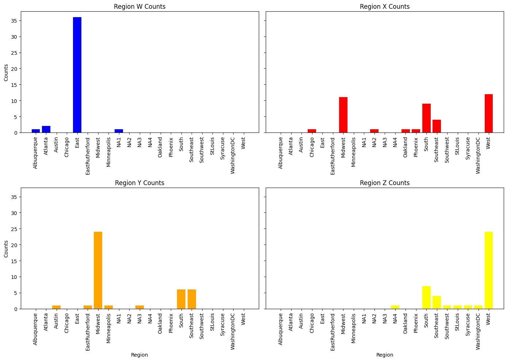
tourney_seeds_2024_MTeam = tourney_seeds_2024[tourney_seeds_2024['Tournament'] == 'M']
tourney_seeds_2024_MTeam = pd.merge(tourney_seeds_2024_MTeam, MTeams, on='TeamID', how='left')
tourney_seeds_2024_MTeam.head()| Tournament | Seed | TeamID | TeamName | FirstD1Season | LastD1Season | D1Seasons | |
|---|---|---|---|---|---|---|---|
| 0 | M | W01 | 1163 | Connecticut | 1985 | 2024 | 39 |
| 1 | M | W02 | 1235 | Iowa St | 1985 | 2024 | 39 |
| 2 | M | W03 | 1228 | Illinois | 1985 | 2024 | 39 |
| 3 | M | W04 | 1120 | Auburn | 1985 | 2024 | 39 |
| 4 | M | W05 | 1361 | San Diego St | 1985 | 2024 | 39 |
plt.figure(figsize=(10, 6))
plt.hist(tourney_seeds_2024_MTeam['FirstD1Season'], bins=30, color='skyblue', edgecolor='black')
plt.xlabel('FirstD1Season')
plt.ylabel('Frequency')
plt.title('Histogram of FirstD1Season in 2024 Tournament Seeds')
plt.show()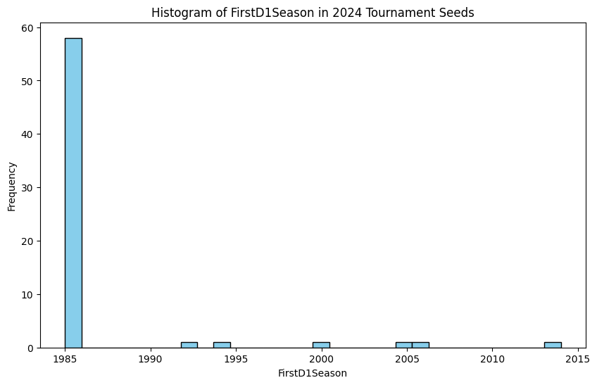
Women
tourney_seeds_2024_WTeam = tourney_seeds_2024[tourney_seeds_2024['Tournament'] == 'W']
tourney_seeds_2024_WTeam = pd.merge(tourney_seeds_2024_WTeam, WTeams, on='TeamID', how='left')
tourney_seeds_2024_WTeam.head()| Tournament | Seed | TeamID | TeamName | |
|---|---|---|---|---|
| 0 | W | W01 | 3376 | South Carolina |
| 1 | W | W02 | 3323 | Notre Dame |
| 2 | W | W03 | 3333 | Oregon St |
| 3 | W | W04 | 3231 | Indiana |
| 4 | W | W05 | 3328 | Oklahoma |
Seed Rank
Men
MNCAATourneyCompactResults_2003 = MNCAATourneyCompactResults[MNCAATourneyCompactResults['Season']>=2003]
MNCAATourneyCompactResults_2003
df_merged_seeds_M = pd.merge(MNCAATourneyCompactResults_2003, MNCAATourneySeeds[['Season','TeamID','Seed']], left_on=['Season','WTeamID'], right_on=['Season','TeamID'], how='left').rename(columns={'Seed':'WSeed'})
df_merged_seeds_M = pd.merge(df_merged_seeds_M, MNCAATourneySeeds[['Season','TeamID','Seed']], left_on=['Season','LTeamID'], right_on=['Season','TeamID'], how='left').rename(columns={'Seed':'LSeed'})
df_merged_seeds_M['WRank'] = df_merged_seeds_M['WSeed'].str[1:3].astype(int)
df_merged_seeds_M['LRank'] = df_merged_seeds_M['LSeed'].str[1:3].astype(int)
df_merged_seeds_M['RankDiff'] = df_merged_seeds_M['LRank'] - df_merged_seeds_M['WRank']
columns_to_delete = ['TeamID_x', 'TeamID_y']
df_merged_seeds_M = df_merged_seeds_M.drop(columns=columns_to_delete)
df_merged_seeds_M.head()| Season | DayNum | WTeamID | WScore | LTeamID | LScore | WLoc | NumOT | WSeed | LSeed | WRank | LRank | RankDiff | |
|---|---|---|---|---|---|---|---|---|---|---|---|---|---|
| 0 | 2003 | 134 | 1421 | 92 | 1411 | 84 | N | 1 | X16b | X16a | 16 | 16 | 0 |
| 1 | 2003 | 136 | 1112 | 80 | 1436 | 51 | N | 0 | Z01 | Z16 | 1 | 16 | 15 |
| 2 | 2003 | 136 | 1113 | 84 | 1272 | 71 | N | 0 | Z10 | Z07 | 10 | 7 | -3 |
| 3 | 2003 | 136 | 1141 | 79 | 1166 | 73 | N | 0 | Z11 | Z06 | 11 | 6 | -5 |
| 4 | 2003 | 136 | 1143 | 76 | 1301 | 74 | N | 1 | W08 | W09 | 8 | 9 | 1 |
This histogram shows the difference in seed rank between the two teams (not considering the regions). Negative means the winner has a lower seed rank.
More than 60% of the games are won by the higher ranked team. But more than 10% of the games were won by teams ranked significantly lower. Therefore, the seed ranking of the competition team cannot accurately predict the outcome of the competition.
plt.figure(figsize=(12, 6))
plt.hist(df_merged_seeds_M['RankDiff'], bins=10, color='skyblue', edgecolor='black')
plt.title('Distribution of Rank Differences')
plt.xlabel('Rank Difference')
plt.ylabel('Frequency')
plt.grid(True)
plt.show()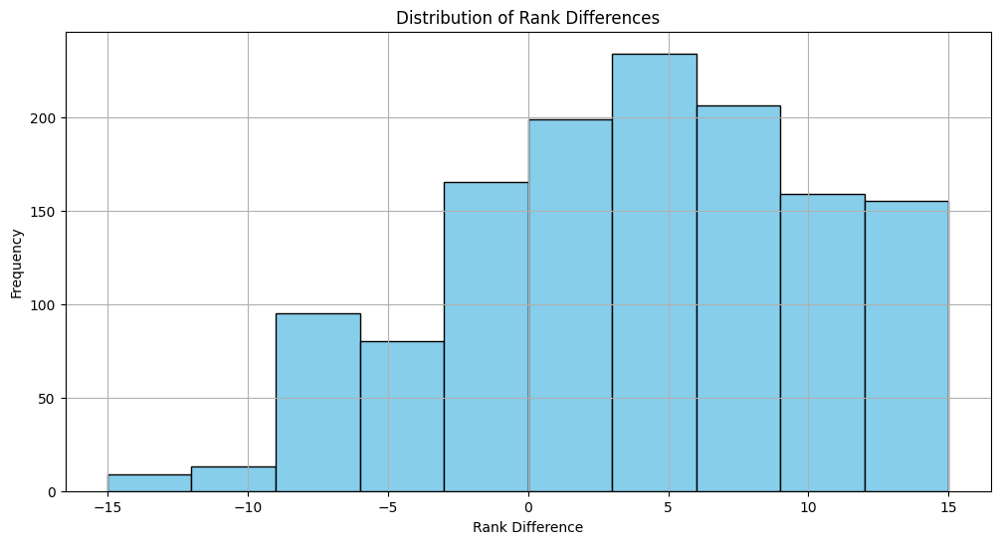
Women
WNCAATourneyCompactResults_2010 = WNCAATourneyCompactResults[WNCAATourneyCompactResults['Season']>=2010]
WNCAATourneyCompactResults_2010
df_merged_seeds_W = pd.merge(WNCAATourneyCompactResults_2010, WNCAATourneySeeds[['Season','TeamID','Seed']], left_on=['Season','WTeamID'], right_on=['Season','TeamID'], how='left').rename(columns={'Seed':'WSeed'})
df_merged_seeds_W = pd.merge(df_merged_seeds_W, WNCAATourneySeeds[['Season','TeamID','Seed']], left_on=['Season','LTeamID'], right_on=['Season','TeamID'], how='left').rename(columns={'Seed':'LSeed'})
df_merged_seeds_W['WRank'] = df_merged_seeds_W['WSeed'].str[1:3].astype(int)
df_merged_seeds_W['LRank'] = df_merged_seeds_W['LSeed'].str[1:3].astype(int)
df_merged_seeds_W['RankDiff'] = df_merged_seeds_W['LRank'] - df_merged_seeds_W['WRank']
columns_to_delete = ['TeamID_x', 'TeamID_y']
df_merged_seeds_W = df_merged_seeds_W.drop(columns=columns_to_delete)
df_merged_seeds_W.head()| Season | DayNum | WTeamID | WScore | LTeamID | LScore | WLoc | NumOT | WSeed | LSeed | WRank | LRank | RankDiff | |
|---|---|---|---|---|---|---|---|---|---|---|---|---|---|
| 0 | 2010 | 138 | 3124 | 69 | 3201 | 55 | N | 0 | X04 | X13 | 4 | 13 | 9 |
| 1 | 2010 | 138 | 3173 | 67 | 3395 | 66 | N | 0 | X08 | X09 | 8 | 9 | 1 |
| 2 | 2010 | 138 | 3181 | 72 | 3214 | 37 | H | 0 | X02 | X15 | 2 | 15 | 13 |
| 3 | 2010 | 138 | 3199 | 75 | 3256 | 61 | H | 0 | W03 | W14 | 3 | 14 | 11 |
| 4 | 2010 | 138 | 3207 | 62 | 3265 | 42 | N | 0 | X05 | X12 | 5 | 12 | 7 |
plt.figure(figsize=(12, 6))
plt.hist(df_merged_seeds_W['RankDiff'], bins=10, color='skyblue', edgecolor='black')
plt.title('Distribution of Rank Differences')
plt.xlabel('Rank Difference')
plt.ylabel('Frequency')
plt.grid(True)
plt.show()
Tourney Compact Results
Men
# Calculate average scores for wins and losses each year
average_scores = MNCAATourneyCompactResults_2003.groupby(['Season'])[['WScore', 'LScore']].mean().reset_index()
average_scores
# Melt the DataFrame to have separate columns for win and loss scores
average_scores_melted = average_scores.melt(id_vars=['Season'], value_vars=['WScore', 'LScore'], var_name='Outcome', value_name='Average Score')
average_scores_melted
plt.figure(figsize=(12, 6))
sns.barplot(x='Season', y='Average Score', hue='Outcome', data=average_scores_melted, palette={'WScore': 'lightseagreen', 'LScore': 'plum'})
plt.title('Average Win and Loss Scores by Year')
plt.xlabel('Season')
plt.ylabel('Average Score')
plt.legend(title='Outcome', loc='upper right')
plt.show()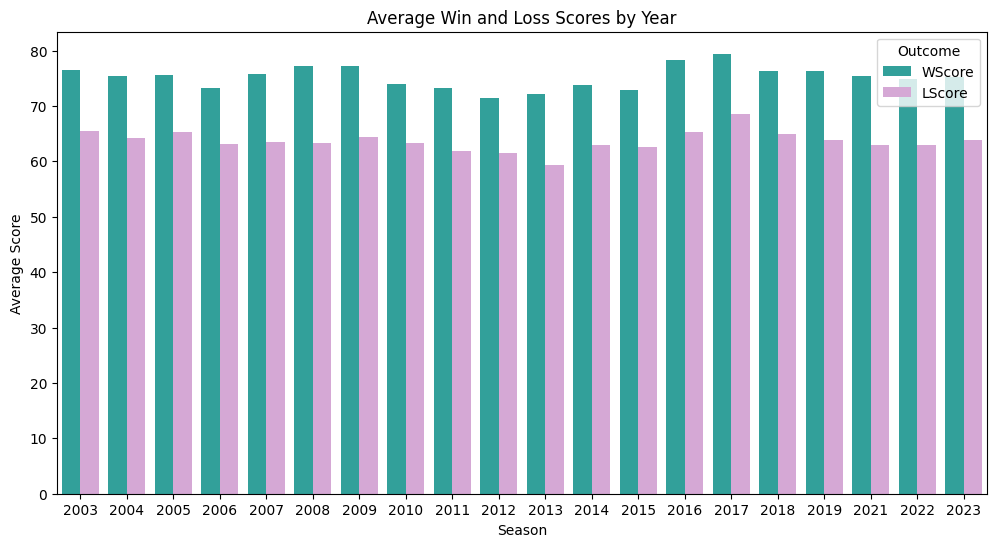
plt.figure(figsize=(12, 6))
plt.subplot(1, 2, 1)
plt.hist(MNCAATourneyCompactResults_2003['WScore'], bins=20, color='lightseagreen', alpha=0.7, label='Winning Team')
plt.hist(MNCAATourneyCompactResults_2003['LScore'], bins=20, color='plum', alpha=0.7, label='Losing Team')
plt.title('Distribution of Scores')
plt.xlabel('Score')
plt.ylabel('Frequency')
plt.legend()
# Visualize the distribution of locations
plt.subplot(1, 2, 2)
MNCAATourneyCompactResults_2003['WLoc'].value_counts().plot(kind='bar', color='skyblue', alpha=0.7)
plt.title('Distribution of Locations')
plt.xlabel('Location')
plt.ylabel('Count')
plt.show()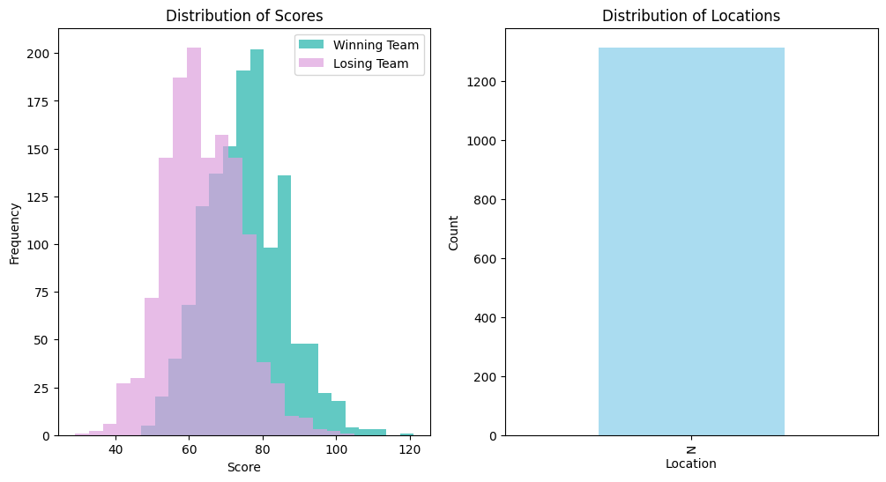
Finding
This historical data of team-level box scores for NCAA men tournaments starts with the 2003 season.
A more ideal normal distribution can be seen in the past scores of the winning and losing teams.
There is no ‘A’ in the ‘Location’, and all most all of them are ‘N’. Which means we might don’t need consider the effect by location.
Women
average_scores = WNCAATourneyCompactResults_2010.groupby(['Season'])[['WScore', 'LScore']].mean().reset_index()
average_scores
# Melt the DataFrame to have separate columns for win and loss scores
average_scores_melted = average_scores.melt(id_vars=['Season'], value_vars=['WScore', 'LScore'], var_name='Outcome', value_name='Average Score')
average_scores_melted
plt.figure(figsize=(12, 6))
sns.barplot(x='Season', y='Average Score', hue='Outcome', data=average_scores_melted, palette={'WScore': 'lightseagreen', 'LScore': 'plum'})
plt.title('Average Win and Loss Scores by Year')
plt.xlabel('Season')
plt.ylabel('Average Score')
plt.legend(title='Outcome', loc='upper right')
plt.show()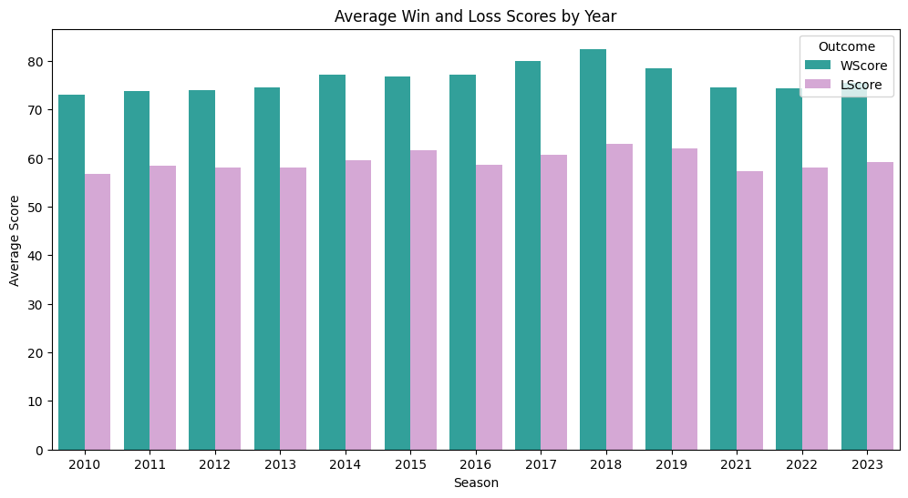
plt.figure(figsize=(12, 6))
plt.subplot(1, 2, 1)
plt.hist(WNCAATourneyCompactResults_2010['WScore'], bins=20, color='lightseagreen', alpha=0.7, label='Winning Team')
plt.hist(WNCAATourneyCompactResults_2010['LScore'], bins=20, color='plum', alpha=0.7, label='Losing Team')
plt.title('Distribution of Scores')
plt.xlabel('Score')
plt.ylabel('Frequency')
plt.legend()
# Visualize the distribution of locations
plt.subplot(1, 2, 2)
WNCAATourneyCompactResults_2010['WLoc'].value_counts().plot(kind='bar', color='skyblue', alpha=0.7)
plt.title('Distribution of Locations')
plt.xlabel('Location')
plt.ylabel('Count')
plt.show()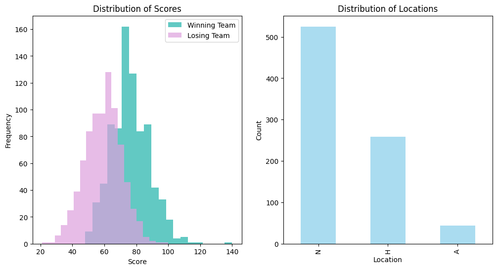
Tourney Compact Results
sns.set(style="whitegrid")
fig, axes = plt.subplots(3, 2, figsize=(15, 15))
# Men's Winning Scores
sns.histplot(MNCAATourneyCompactResults['WScore'], bins=30, kde=True, ax=axes[0, 0], color='blue')
axes[0, 0].set_title('Men\'s Winning Scores Distribution')
axes[0, 0].set_xlabel('Score')
axes[0, 0].set_ylabel('Frequency')
# Men's Losing Scores
sns.histplot(MNCAATourneyCompactResults['LScore'], bins=30, kde=True, ax=axes[0, 1], color='red')
axes[0, 1].set_title('Men\'s Losing Scores Distribution')
axes[0, 1].set_xlabel('Score')
axes[0, 1].set_ylabel('Frequency')
# Men's Number of Overtimes
sns.histplot(MNCAATourneyCompactResults['NumOT'], bins=30, kde=False, ax=axes[1, 0], color='purple')
axes[1, 0].set_title('Men\'s Number of Overtimes Distribution')
axes[1, 0].set_xlabel('Number of Overtimes')
axes[1, 0].set_ylabel('Frequency')
# Women's Winning Scores
sns.histplot(WNCAATourneyCompactResults['WScore'], bins=30, kde=True, ax=axes[1, 1], color='blue')
axes[1, 1].set_title('Women\'s Winning Scores Distribution')
axes[1, 1].set_xlabel('Score')
axes[1, 1].set_ylabel('Frequency')
# Women's Losing Scores
sns.histplot(WNCAATourneyCompactResults['LScore'], bins=30, kde=True, ax=axes[2, 0], color='red')
axes[2, 0].set_title('Women\'s Losing Scores Distribution')
axes[2, 0].set_xlabel('Score')
axes[2, 0].set_ylabel('Frequency')
# Women's Number of Overtimes
sns.histplot(WNCAATourneyCompactResults['NumOT'], bins=30, kde=False, ax=axes[2, 1], color='purple')
axes[2, 1].set_title('Women\'s Number of Overtimes Distribution')
axes[2, 1].set_xlabel('Number of Overtimes')
axes[2, 1].set_ylabel('Frequency')
plt.tight_layout()
plt.show()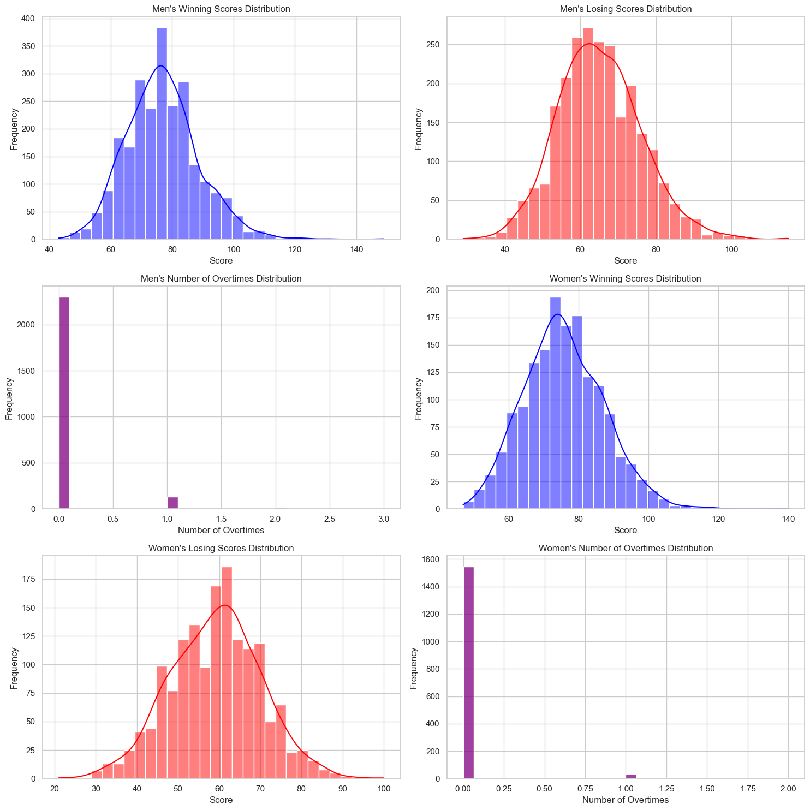
Both men’s and women’s tournaments have similar patterns in terms of the distribution of scores.
Winning scores tend to be higher and more spread out compared to losing scores.
Overtime games are rare in both tournaments, indicating that most games are decided within the regular time.
# Plotting histograms for WScore, LScore, and NumOT
fig, axes = plt.subplots(2, 3, figsize=(18, 12))
fig.suptitle('Score and Overtime Distributions')
# Women's dataset
sns.histplot(WRegularSeasonCompactResults['WScore'], bins=30, kde=True, ax=axes[0, 0]).set_title('Women - Winning Score')
sns.histplot(WRegularSeasonCompactResults['LScore'], bins=30, kde=True, ax=axes[0, 1]).set_title('Women - Losing Score')
sns.histplot(WRegularSeasonCompactResults['NumOT'], bins=30, kde=True, ax=axes[0, 2]).set_title('Women - Number of Overtimes')
# Men's dataset
sns.histplot(MRegularSeasonCompactResults['WScore'], bins=30, kde=True, ax=axes[1, 0]).set_title('Men - Winning Score')
sns.histplot(MRegularSeasonCompactResults['LScore'], bins=30, kde=True, ax=axes[1, 1]).set_title('Men - Losing Score')
sns.histplot(MRegularSeasonCompactResults['NumOT'], bins=30, kde=True, ax=axes[1, 2]).set_title('Men - Number of Overtimes')
plt.tight_layout(rect=[0, 0.03, 1, 0.95])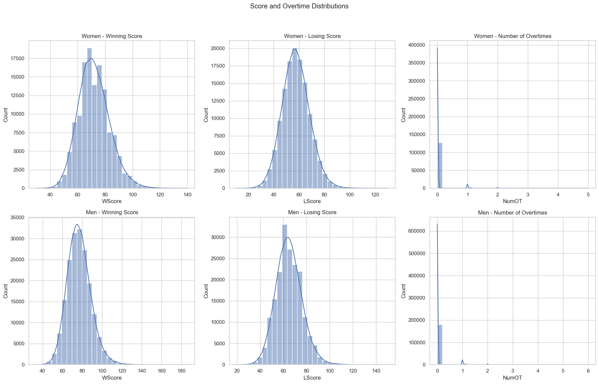
-The x-axis represents the range of scores achieved by teams.
-The y-axis represents the frequency (count) of games that fall within each score range.
# Trends over seasons - Average Winning Score per Season
womens_trend = WRegularSeasonCompactResults.groupby('Season')['WScore'].mean().reset_index()
mens_trend = MRegularSeasonCompactResults.groupby('Season')['WScore'].mean().reset_index()
# Plotting trends over seasons
fig, axes = plt.subplots(1, 2, figsize=(18, 6))
fig.suptitle('Average Winning Score per Season')
sns.lineplot(data=womens_trend, x='Season', y='WScore', ax=axes[0]).set_title('Women - Average Winning Score per Season')
sns.lineplot(data=mens_trend, x='Season', y='WScore', ax=axes[1]).set_title('Men - Average Winning Score per Season')
plt.xticks(rotation=90)
plt.tight_layout(rect=[0, 0.03, 1, 0.95])
plt.show()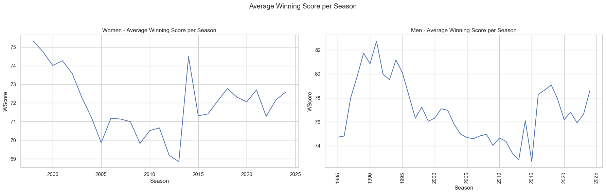